Imágenes Inteligentes
Imágenes Inteligentes
Imagen Panorámica 360° AVM
Funcionamiento
Introducción
Activar o desactivar el AVM
Puede activar la función AVM mediante cualquiera de los siguientes métodos:
El Monitor de Vista Envolvente 360° (AVM) capta el entorno que rodea al vehículo a través de las cámaras de visión envolvente situadas alrededor del vehículo y muestra ese entorno en el CID.
• El AVM se activa automáticamente cuando se cambia la marcha al modo Reversa (R).
Las cámaras de visión envolvente están instaladas sobre las placas de matrícula delantera y trasera y debajo de los espejos laterales izquierdo y derecho.
• En la barra de tareas inferior del CID, toque el icono (si está configurado).
advertencia
• Utilice comandos de voz como "Activar el AVM" para encender el AVM.
El AVM es una función de asistencia que sirve únicamente como referencia y no reemplaza la visión del conductor del entorno circundante. El AVM no puede manejar todas las condiciones de tráfico, clima y carretera, y usted, como conductor del vehículo, es responsable de conducir de manera segura; no confíe en esta función para controlar el vehículo. No hacerlo podría provocar lesiones.
• Si la tecla de acceso directo del volante en la pantalla de control central está configurada en "Activar o desactivar la cámara 360", puede usar la tecla de acceso directo del volante para activar la cámara 360.
Puede desactivar la función AVM mediante cualquiera de los siguientes métodos:
• En la interfaz de la Cámara 360, toque en la esquina superior izquierda para apagar la cámara 360.
• Utilice comandos de voz como "Desactivar el AVM" para apagar el AVM.
Imágenes Inteligentes
• Si la tecla de acceso directo del volante en la pantalla de control central está configurada en "Activar o desactivar la cámara 360", puede usar la tecla de acceso directo del volante para desactivar la Cámara 360.
• Si no se produce ninguna interacción con la pantalla en un plazo de 5 s, los iconos se ocultarán automáticamente. Toque el área de vista superior para volver a mostrarlos.
- Interfaz del modo de línea
auxiliar dinámica
• El ancho del vehículo se indica mediante dos líneas blancas finas.
• En la vista delantera o trasera, se utilizan líneas de escala segmentadas para indicar la distancia entre los vehículos y los objetos.
• Las distancias indicadas por cada línea de escala, de cerca a lejos, son de aproximadamente 0,6 m, 1 m y 1,5 m respectivamente.
- Superficie de rodada de neumáticos
• Indica la ruta de conducción de las ruedas.
1. Cambio entre modo 3D/2D.
- Línea de parada de seguridad
• Indica la posición ubicada aproximadamente a 0,3 m detrás del vehículo.
- Icono de cambio de vista.
• En el modo 2D, puede tocar en el modelo del vehículo para alternar entre las vistas delantera, trasera, izquierda, derecha y de los cubos de rueda.
Detenga el vehículo cuando la línea de parada de seguridad entre en contacto con un obstáculo.
advertencia
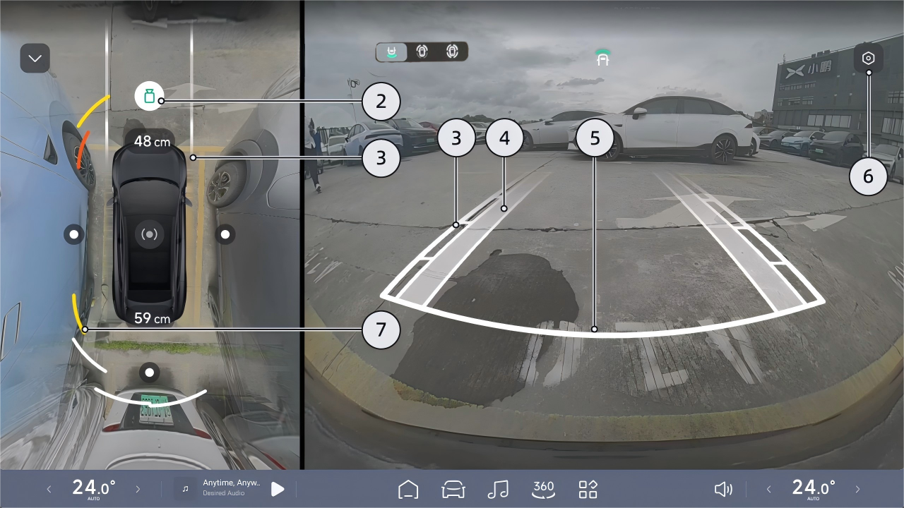

Imágenes Inteligentes
- Ajustes de Imagen
Interfaz del modo 3D
Toque " " para ir a la interfaz de "Imágenes Inteligentes", donde puede configurar las funciones relacionadas con la imagen.
- Monitoreo de Distancia
• Simula la visualización según la distancia y la dirección de los obstáculos.
• Cuando se muestra el color blanco, la distancia es larga.
• Cuando se muestra el color rojo, la distancia es muy corta.
• La distancia entre el vehículo y el obstáculo más cercano también se mostrará como un valor numérico delante y detrás del vehículo respectivamente.
• Después de cambiar el sistema al modo 3D, integrará el modelo virtual 3D en la imagen del entorno real.
• Podés deslizar el anillo del modelo de la izquierda alrededor o deslizar directamente el modelo de la derecha para lograr una rotación libre de 360°.
• Si no se realiza ninguna operación en la pantalla durante 5 segundos, el círculo y el ícono se ocultarán automáticamente. Tocá el área de la vista superior para volver a mostrar el círculo y el ícono.

Imagen Inteligente
Retención de imagen de marcha atrás al cambiar a la marcha R
Mientras hacés marcha atrás, tocá el ícono de cambio de vista del buje de la rueda en el CID para alternar entre la vista trasera, la vista del buje de la rueda delantera y las vistas de los bujes de las ruedas delanteras y traseras.
En el CID, entrá a la interfaz “ →Asistencia al Conductor→Estacionamiento” y podés activar o desactivar “Retención de Imagen de Marcha Atrás”.
Cuando la función está activada y se cambia de la marcha R a la D, el AVM cambiará a la vista delantera. Cuando se cambia a la marcha P o la velocidad del vehículo supera los 10 km/h, el AVM saldrá automáticamente.
Apagado automático de la cámara de 360
Alternar el cambio de vista del buje de la rueda durante la marcha atrás
En el CID, entrá a la interfaz “ →Imagen Inteligente” y podés activar o desactivar “Apagado Automático de la Cámara de 360”.
Una vez habilitada la función, encendé manualmente el AVM. Si no se realiza ninguna operación durante 5 s cuando la velocidad supera los 30 km/h, el AVM se apagará automáticamente.

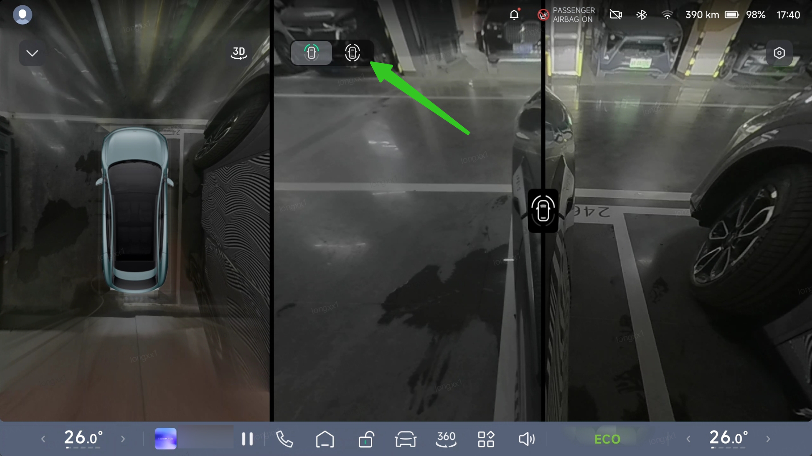
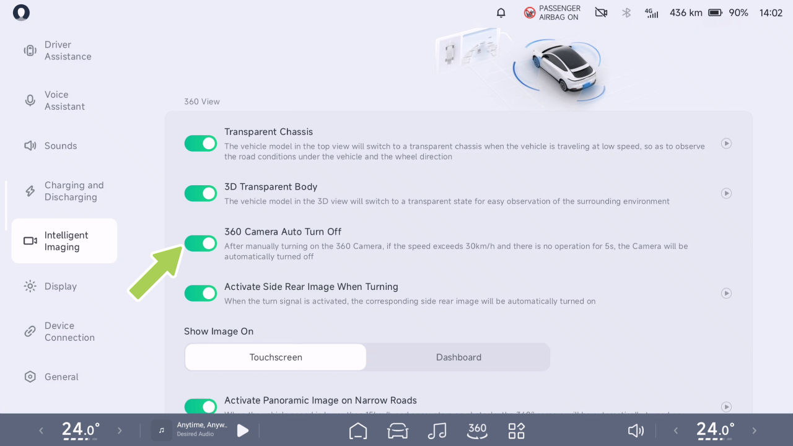
Imagen Inteligente
Advertencias, Precauciones y Limitaciones
Carrocería Transparente 3D
Los objetos en la imagen del AVM se ven deformados respecto a los objetos reales.
advertencia
Introducción
• Cámara restringida
El AVM puede no funcionar en los siguientes casos:
• Cámara bloqueada (polvo, cubierta, etc.) o malas condiciones climáticas (por ejemplo, lluvia intensa, nieve intensa, niebla densa).
Las advertencias, precauciones y limitaciones anteriores no cubren todas las condiciones que pueden afectar el funcionamiento normal del AVM.
Cuando la función de carrocería transparente 3D está habilitada y la interfaz del AVM se cambia al modo de visualización 3D, el modelo 3D del vehículo a la derecha se volverá semitransparente, ayudando a evaluar los riesgos de colisión alrededor del vehículo.
La Carrocería Transparente 3D es una ayuda solo de referencia y no reemplaza la visión del conductor del
advertencia
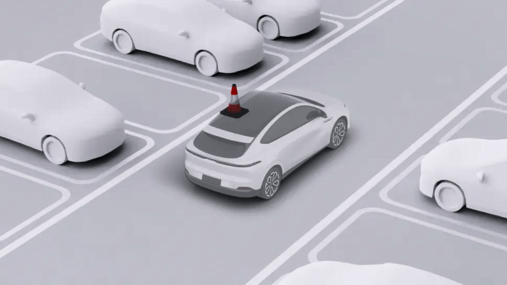
Imagen Inteligente
entorno circundante. La carrocería transparente 3D no puede manejar todas las condiciones de tránsito, clima y carretera; vos, como conductor del vehículo, sos responsable de la seguridad al conducir, no confíes en esta función para controlar el vehículo. No hacerlo podría provocar lesiones.
En el CID, entrá a la interfaz “ →Imagen Inteligente” y podés activar o desactivar “Carrocería Transparente 3D”.
Chasis Transparente
Operación
Introducción
Activar o desactivar la Carrocería Transparente 3D
When the transparent chassis feature is enabled...
Cuando la función de chasis transparente está activada y el vehículo circula a baja velocidad, la vista superior del lado izquierdo cambiará al modo de chasis transparente. Esto muestra un modelo virtual del vehículo superpuesto sobre las condiciones reales de la vía en tiempo real,

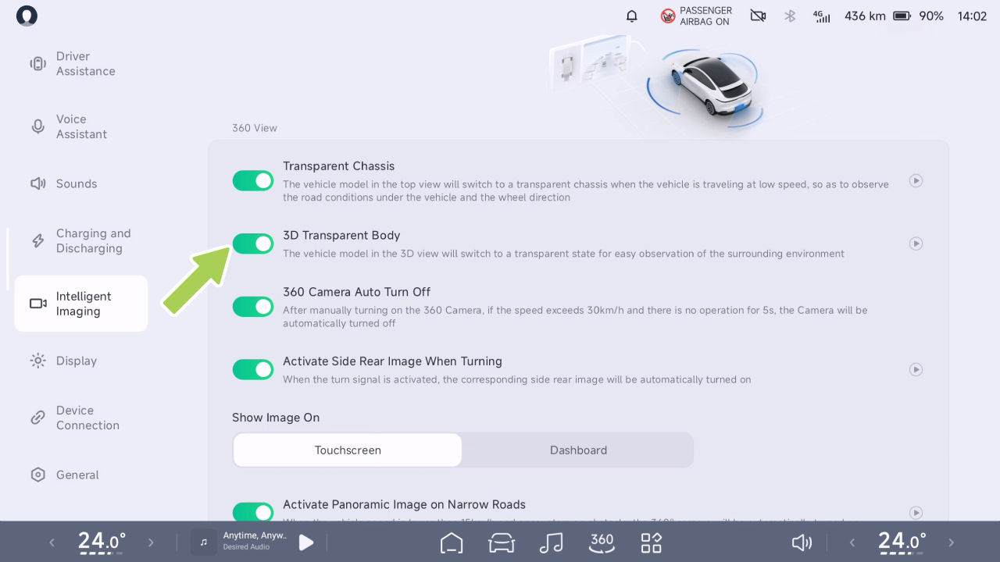
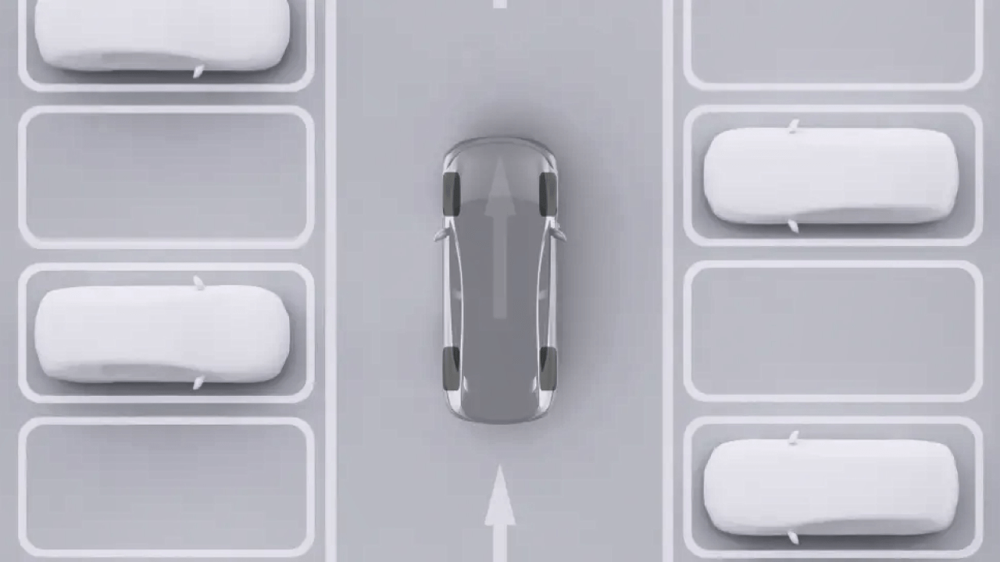
Imagen inteligente
lo que facilita identificar cualquier posible riesgo de colisión alrededor del vehículo.
Funcionamiento
advertencia
Activar o desactivar el chasis transparente
El chasis transparente es una ayuda únicamente informativa y no reemplaza la visión del conductor del entorno circundante. El chasis transparente no puede gestionar todas las condiciones de tráfico, climáticas y de la vía, y usted, como conductor del vehículo, es responsable de conducir de forma segura; no confíe en esta función para controlar el vehículo. No hacerlo podría provocar lesiones.
En el CID, vaya a la interfaz “ →Imagen inteligente”, donde podrá activar o desactivar el “Chasis transparente”.

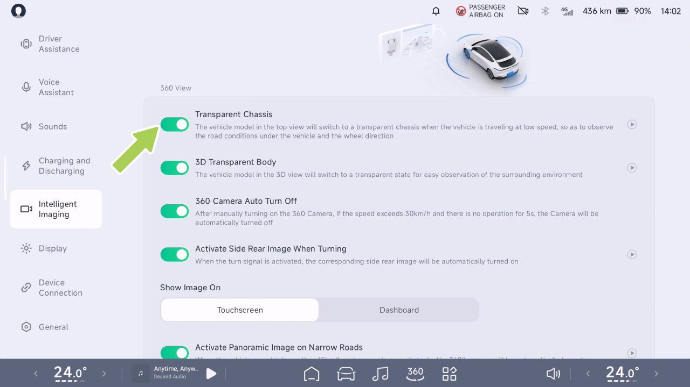
Imagen inteligente
Activar la imagen panorámica en caminos estrechos
advertencia
Introducción
La panorámica activa de banda estrecha es una función de asistencia únicamente de referencia y no reemplaza la visión del conductor del entorno circundante. Usted es responsable de conducir de forma segura como conductor del vehículo, y no debe confiar en esta función para controlar el vehículo. No hacerlo podría provocar lesiones.
Funcionamiento
Activar o desactivar la imagen panorámica en caminos estrechos
Cuando el vehículo está en la marcha D y la velocidad es inferior a 15 km/h, si se detectan obstáculos a ambos lados de la parte delantera y trasera del vehículo, este activará la imagen panorámica en caminos estrechos como asistencia a la conducción.
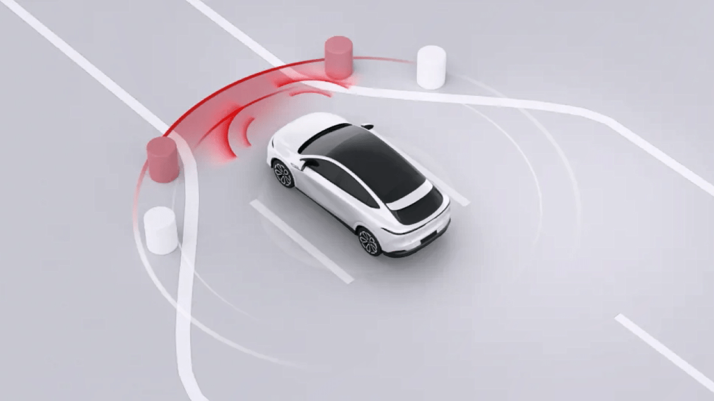
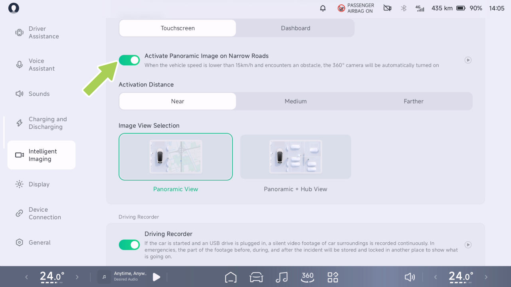
Imagen inteligente
En el CID, vaya a la interfaz “ →Imagen inteligente”, donde podrá activar o desactivar la “Imagen panorámica en caminos estrechos” y seleccionar la distancia de activación y la vista de la imagen según sus hábitos de conducción.
Activar la imagen lateral trasera al girar
Introducción
Distancia de activación: cercana unos 50 cm, media unos 60 cm y lejana unos 75 cm.
La vista de la imagen se puede configurar en “Vista panorámica” o “Vista panorámica + Vista del cubo”.
Cuando el vehículo está en la posición D y se activa el intermitente, la imagen trasera del lado correspondiente se activará automáticamente para que el conductor vea el punto ciego trasero de ese lado y como asistencia a la conducción.

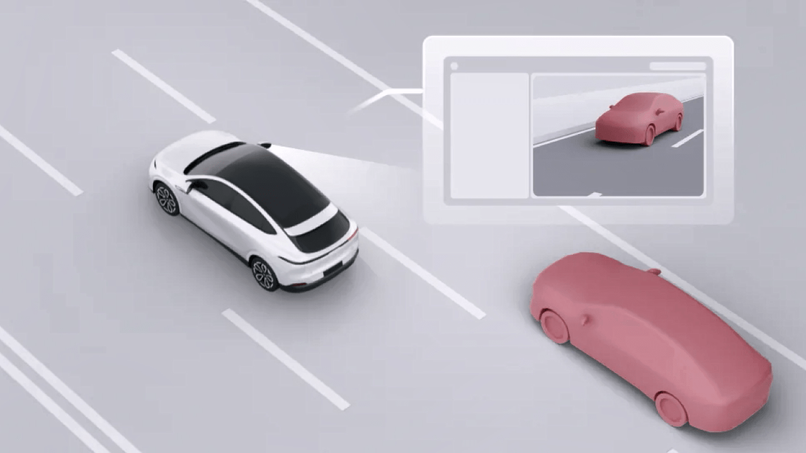
Imagen inteligente
advertencia
En el CID, vaya a la interfaz “ →Imagen inteligente”, donde podrá activar o desactivar la “Imagen lateral trasera al girar”.
Rear View en el lado activo de la dirección es una función de asistencia que sirve solo como referencia y no reemplaza la visión del conductor del entorno circundante. Como conductor del vehículo, usted es responsable de conducir de forma segura, y no debe depender de esta función para controlar el vehículo. No hacerlo podría provocar lesiones.
Visualización de la interfaz en la pantalla de control central
Operación
Activar o desactivar Activar imagen lateral trasera al girar
La imagen se puede arrastrar a diferentes posiciones. Puede tocar en la interfaz de imagen para acercar o alejar.

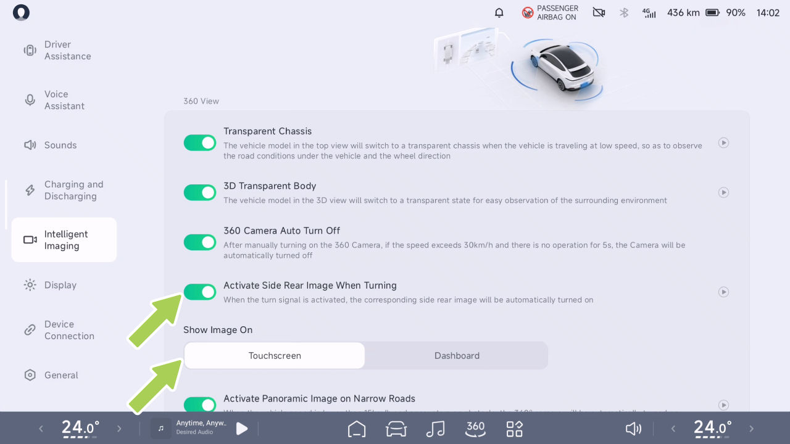
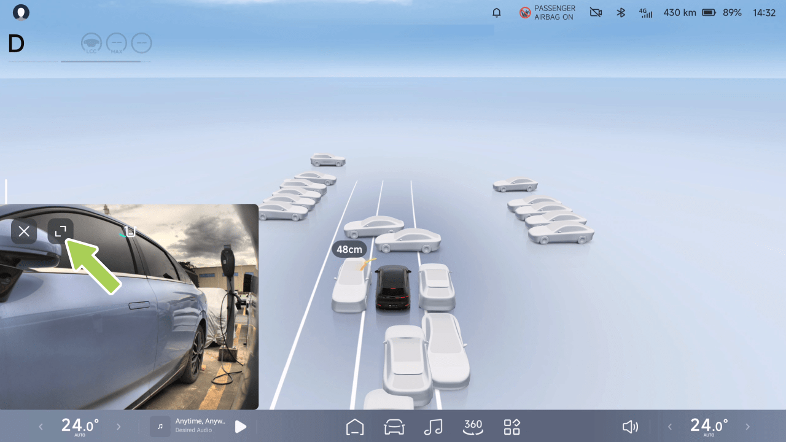
Generación de imágenes inteligente
Visualización de la interfaz del cuadro de instrumentos
La función de grabadora de conducción permite grabar video durante la conducción y almacena los videos en una unidad USB. Los archivos de video se pueden usar para revisar información pasada o para ayudar con la recopilación de pruebas en caso de un accidente.
Operación
Activar o desactivar la grabadora de conducción
Grabadora de conducción*
Introducción
En la CID, vaya a la interfaz “ →Generación de imágenes inteligente” y podrá activar o desactivar la “Grabadora de conducción”.

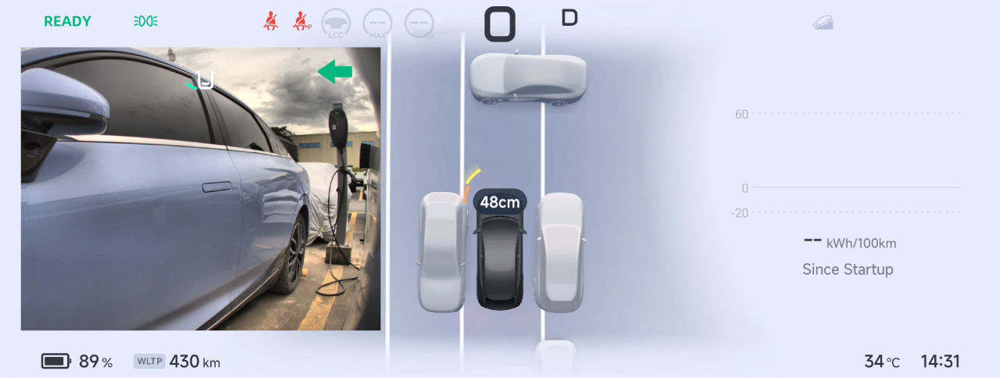
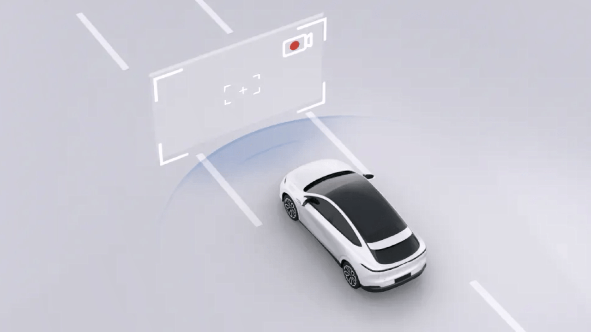
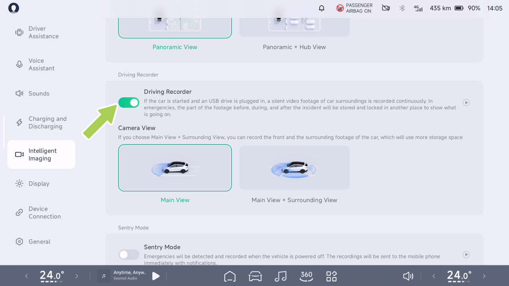
Generación de imágenes inteligente
La función de grabadora de conducción admite la grabación de la “Vista principal” o “Vista principal + Vista del entorno”.
Ver el estado de la grabadora de conducción
Toque el icono en la barra de estado de la parte superior de la CID y podrá ver el estado de la grabadora de conducción.
Activación automática: En la CID, cuando la “Grabadora de conducción” está activada y la grabadora está funcionando, el vehículo iniciará automáticamente la grabación de emergencia y guardará el video al detectar un riesgo de colisión.
Grabación de conducción de emergencia
Cuando la grabadora de conducción está activada y en curso
Cuando la grabadora de conducción está desactivada
Activación manual: En la CID, cuando la “Grabadora de conducción” está activada y la grabadora está funcionando, puede tocar el icono en la barra de estado de la parte superior de la CID y luego tocar “Grabación de emergencia” en el icono del menú desplegable, o tocar el icono (p. ej., configuración personalizada) en la barra de tareas inferior de la CID para grabar un video de emergencia.
Cuando la grabadora de conducción no está disponible y es necesario revisar la unidad USB
Exportar videos de conducción a un teléfono móvil
En la CID, vaya a la interfaz “ →DVR”, toque “Seleccionar” para elegir el video que desea transferir, toque “ ” (o el icono en la esquina inferior derecha de la interfaz de video) para entrar en la interfaz de transferencia de archivos y siga las indicaciones para completar la transferencia:
Ubicación de almacenamiento del video de emergencia: En la pantalla de control central, vaya a “ →Grabadora de conducción→Grabación de emergencia” y podrá ver y exportar los videos de emergencia.

Imágenes Inteligentes
1. Conectá el teléfono móvil al hotspot del IVI;
- Abrí la app XPENG e iniciá sesión en tu cuenta;
la unidad no está instalada, la Grabadora de Conducción no se puede usar correctamente.
-
Seleccioná el dispositivo al que se transfiere el archivo desde la pantalla de control central;
-
Después de que aparezca una ventana emergente en la app móvil, tocá “Recibir” para transferir el archivo al álbum del teléfono móvil.
Consejos
• Durante la transferencia de archivos, la pantalla de control central y la app móvil deben permanecer en la interfaz de transferencia y mantener el WiFi del teléfono móvil encendido para evitar la desconexión.
El puerto de fuente multimedia USB y el puerto de alimentación Type-C ubicados en la parte delantera de la caja de almacenamiento del apoyabrazos central admiten la función de transmisión de datos. Una vez que se inserta una unidad USB, se puede usar la función de Grabadora de Conducción.
• Durante la transferencia de archivos, el teléfono no podrá acceder a Internet y se reanudará una vez que la transferencia se complete y se desconecte.
Solo se reconoce una unidad USB para la grabación de video de conducción a la vez. El vehículo priorizará la unidad USB utilizada antes del apagado anterior en cada encendido. Si la unidad USB utilizada anteriormente no se reconoce
Instalar dispositivo de almacenamiento externo
Los datos de video de conducción se almacenarán en un dispositivo de almacenamiento externo (unidad USB). Si la USB
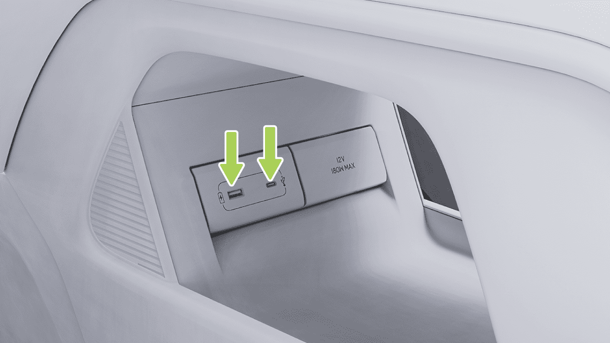
Imágenes Inteligentes
dentro de los tres segundos posteriores al encendido, el vehículo usará la primera unidad USB detectada en la secuencia de lectura como la unidad activa.
pueden perderse, y puede haber daños en la unidad U, o los datos de video pueden corromperse o perderse. Por favor, intentá evitar el uso de adaptadores o estaciones de acoplamiento, ya que pueden causar conexiones inestables.
Advertencias, Precauciones y Limitaciones
• Cada segmento de video dura aproximadamente tres minutos de forma predeterminada. Si durante la grabación ocurren operaciones como bloquear el vehículo, apagarlo, expulsar la unidad USB, borrar videos, formatear, o cambiar las vistas de grabación, la grabación se interrumpirá. En tales casos, el video actual se guardará, y comenzará a grabarse un nuevo video, que puede ser más corto que un minuto.
• Cuando la Grabadora de Conducción está encendida, los videos se grabarán en bucle, sobrescribiéndose los videos más antiguos una vez que el almacenamiento esté lleno. Para asegurar que los videos importantes no se sobrescriban, por favor exportalos a otros dispositivos como teléfonos móviles o computadoras a tiempo cuando sea necesario.
• Para una mejor compatibilidad, por favor usá una unidad USB con una capacidad de 32GB o superior, USB 2.0 o superior, y una velocidad de escritura de 10MB/s o superior.
• Evitá el apagado de emergencia durante la grabación, ya que esto impedirá que el video actual se guarde.
• Solo se admiten unidades USB formateadas en FAT16, FAT32 o NTFS. Para las unidades USB que no estén en los formatos mencionados anteriormente, se recomienda formatear la unidad de forma proactiva. Formatear una unidad USB eliminará todos sus archivos, así que guardá los datos importantes antes de formatear.
• Los videos de la grabadora de conducción se almacenan en un disco U independiente. No extraiga el disco U directamente. Para retirarlo, primero vaya a la CID, a la interfaz “ →Grabadora de Conducción→Gestión de Almacenamiento” y toque “Expulsión Segura”. De lo contrario, el video que se está grabando en ese momento
• Las unidades USB tienen una vida útil limitada de escritura/borrado y se consideran un producto consumible. Si

Imagen Inteligente
nota velocidades de lectura de video lentas o pérdidas frecuentes de video después de seis meses de uso, reemplace la unidad USB por una nueva.
después del bloqueo y apagado. Si se detecta una aproximación continua o una vibración anormal, se activará una alarma (la pantalla de control central se enciende y las luces del vehículo parpadean) y se grabarán videos antes y después de cualquier riesgo potencial, documentando eficazmente posibles peligros de seguridad y actos de daño malicioso. Para los eventos de vibración, los usuarios serán notificados de inmediato mediante notificaciones push de la App móvil y videos de centinela de alto riesgo desensibilizados para garantizar alertas oportunas.
• Para su seguridad al conducir, tenga cuidado al ver el contenido de los videos cuando el vehículo está en marcha.
Modo Centinela
Introducción
Puede realizar las siguientes acciones en el modo centinela:
• Activar o desactivar y configurar el modo centinela en la CID.
• Ver los videos de centinela en la CID.
• Activar o desactivar el modo centinela mediante la App móvil.
Una vez activada, la función monitoreará continuamente el entorno alrededor del vehículo
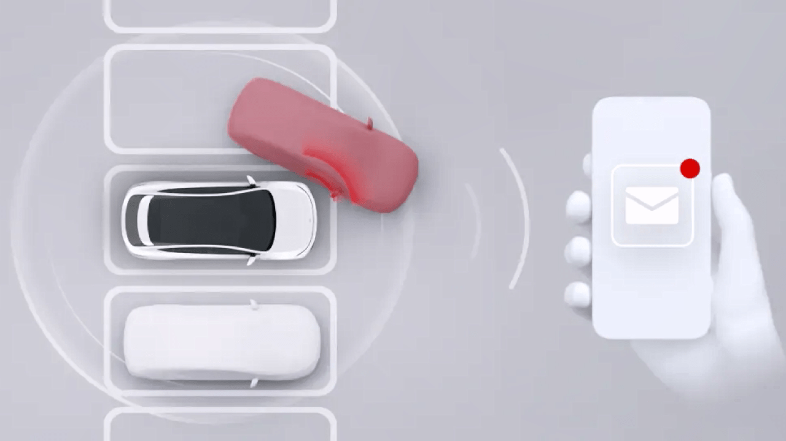
Imagen Inteligente
Operación
Ver el video de centinela en la pantalla de control central
Activar o desactivar y configurar el modo centinela en la pantalla de control central
En la CID, vaya a “ →DVR→Grabaciones del Modo Centinela” para ver las grabaciones originales del Centinela.
precaución
La grabación puede fallar si el sistema se queda sin espacio.
Activar o desactivar el modo centinela mediante la App móvil
En la app móvil, vaya a la interfaz “XPENG” y podrá activar o desactivar el Modo Centinela.
En la CID, vaya a la interfaz “ →Imagen inteligente” y podrá activar o desactivar el “Modo Centinela” y configurar su sensibilidad.
Advertencias, Precauciones y Limitaciones
• Al usar el modo centinela, el sistema accederá a los permisos de la cámara para monitorear el entorno del vehículo. Asegúrese de cumplir con las leyes y regulaciones locales, así como con las regulaciones de uso de cámaras de su ubicación al usar el modo centinela, y asuma toda la responsabilidad por su uso.


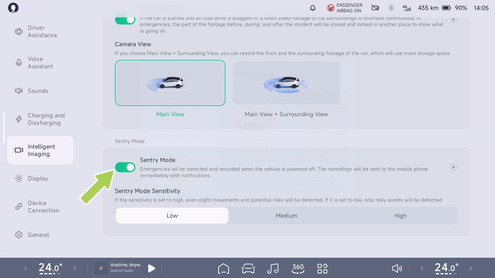
Imagen Inteligente
• Una vez activado el modo centinela, la alarma antirrobo del vehículo también puede activarse simultáneamente en respuesta a intrusiones ilegales, como intentos de forzar la puerta o el maletero.
• El modo centinela solo permanece activo durante un único período de ausencia del vehículo y se desactivará automáticamente cuando el vehículo se encienda.
• El modo centinela consume cierta cantidad de energía de la batería. Actívelo solo cuando sea necesario.
• El modo Centinela consumirá energía de la batería de forma continua durante su funcionamiento. El modo Centinela se desactivará automáticamente cuando la autonomía de conducción del vehículo descienda por debajo de los 50 km.